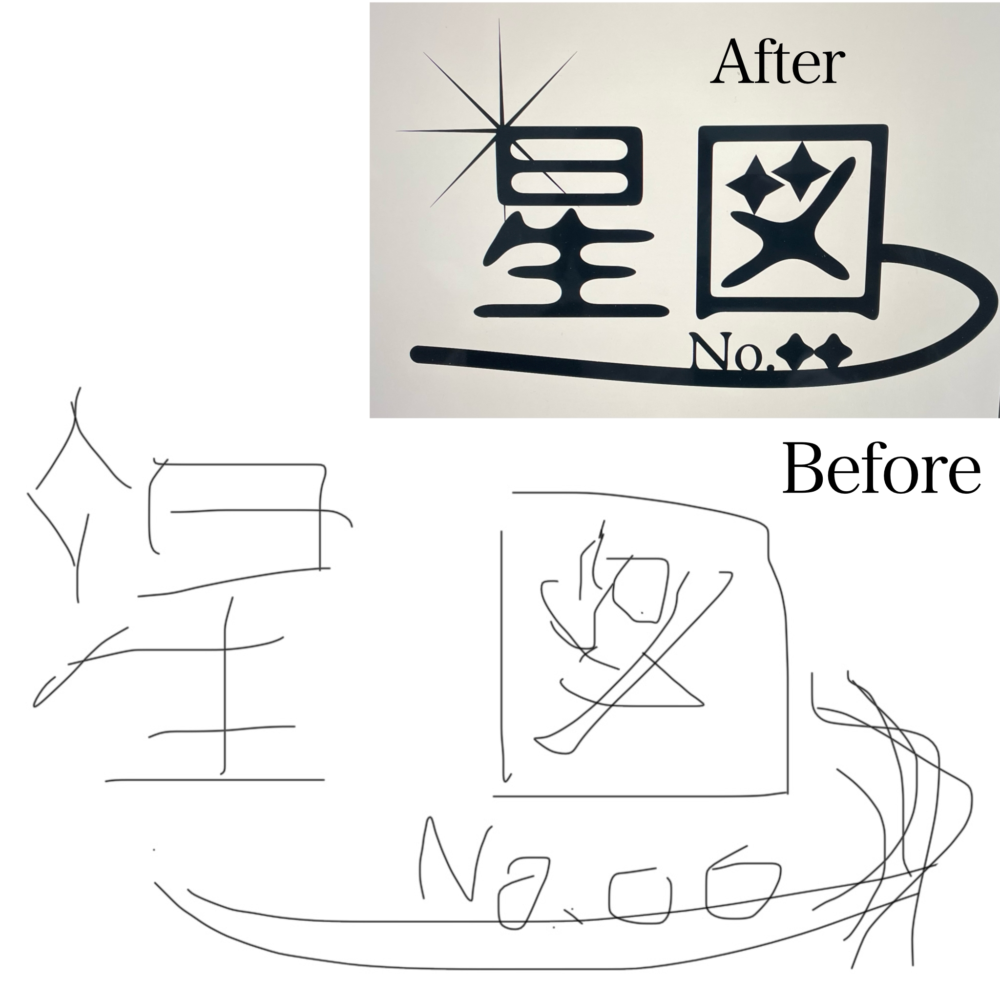
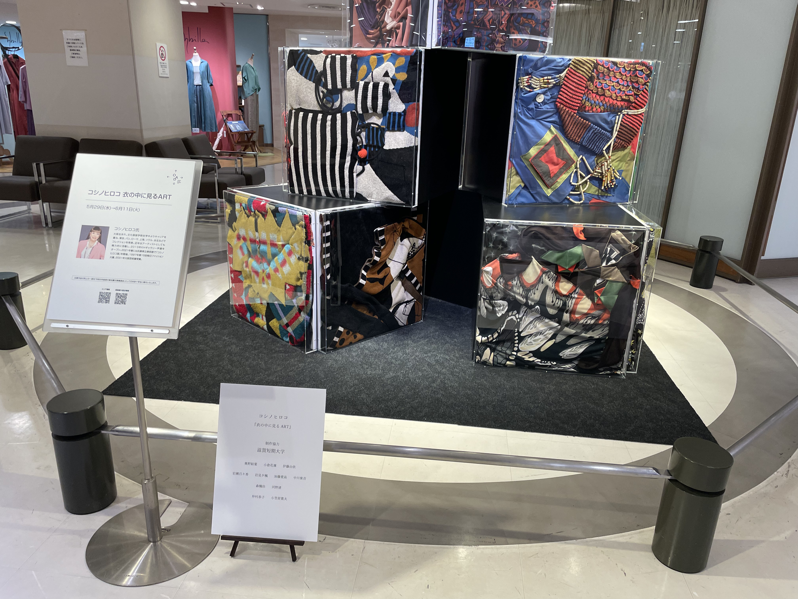
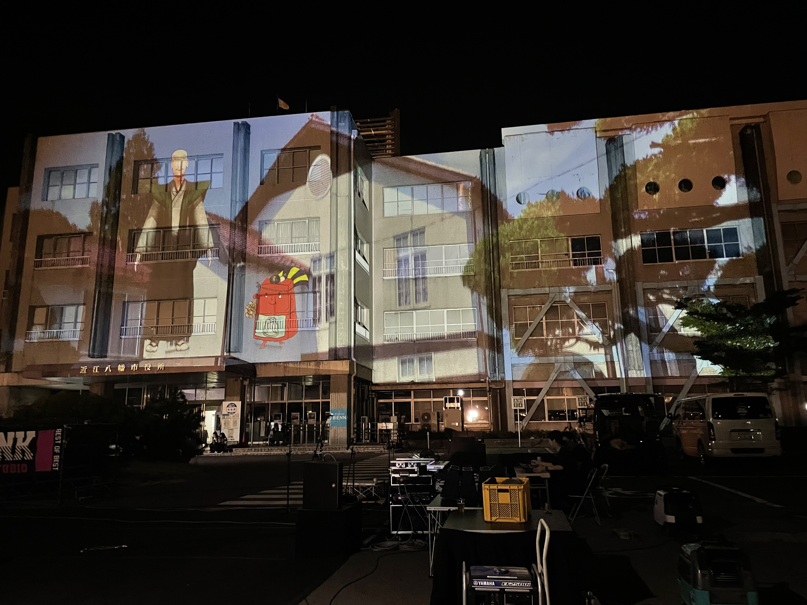
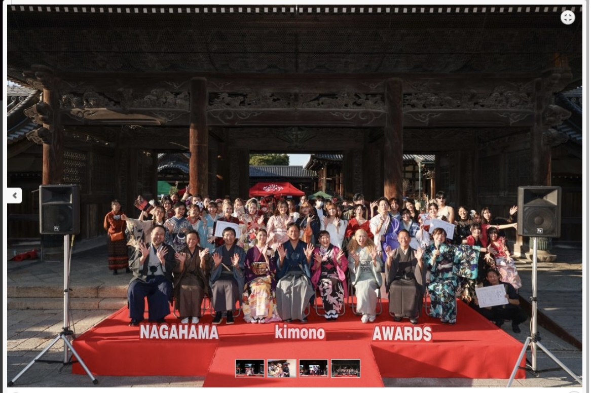
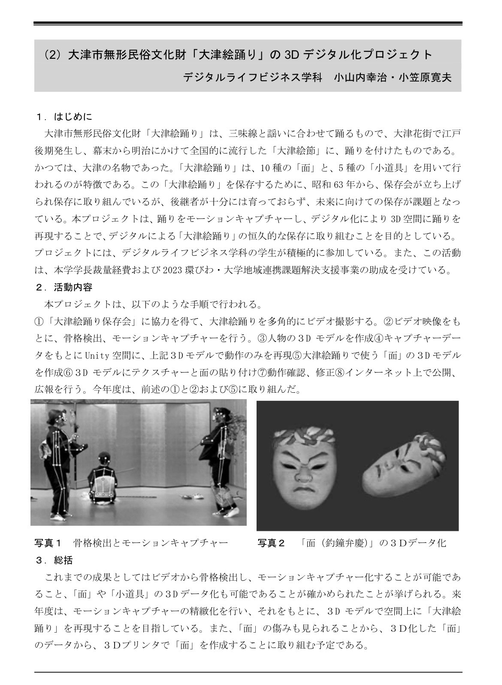

自己紹介
加藤 愛晶(かとうあん)です。
2026年滋賀短期大学卒業。
この自作HPは大まかな枠や変更はAIを使用しましたが、細かな修正や微調整は手動で行いました。
よろしくお願いします。
使用ツール
Blender / Photoshop / After Effects / Premiere Pro / Unity / Visual Studio Code
作品紹介

グラフィック
星を意識したデザインです。文字の一部や装飾にキラキラとしたものを取り入れました。

作品2

作品3
これまで関わったプロジェクト

OAD(大阪アートデザイン)プロジェクト
衣の中に見るART
コシノヒロコさんのプロジェクトに参加させていただきました
コシノヒロコさんには直接布の特性などご指導いただきました

八幡フェスタのプロジェクションマッピング
プロジェクションマッピングの映像の素材作成、アイデア提案など作品全体の完成に向けて幅広く関わりました
滋賀短期大学学園祭看板作成
滋賀短期大学在籍中の期間二年間学園祭の看板を作成しました
看板データは消失しています
大津市から学校への依頼
保育士を増やすプロジェクト

プロジェクト5

プロジェクト6
お問い合わせ
メール: katou.ann1227@gmail.com